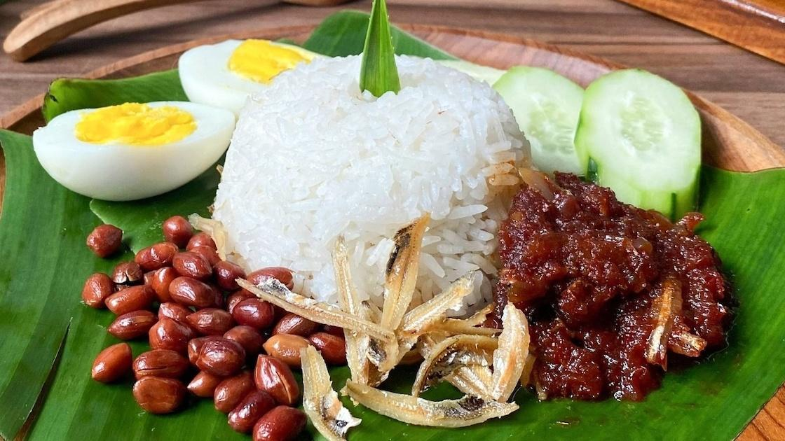
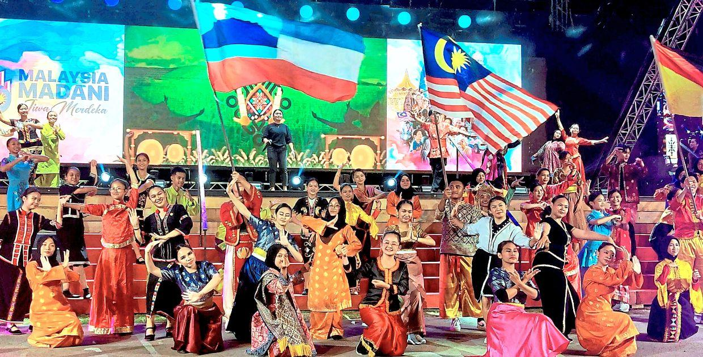

Celebrate Malaysia!
A Nation of Festivals, Traditions and Togetherness
Malaysia is a country filled with exciting celebrations, colourful festivals and meaningful traditions. Throughout the year, Malaysians come together to celebrate their cultures, beliefs and national identity. Join our upcoming club events and discover the festivals that bring the nation together!
Learn More About Malaysian CultureUpcoming Club Events
Members get special prices for every event below. Premium members join workshops and food walks for free. Become a member to reserve your place.
| Event | Date and Time | Location | Description |
|---|---|---|---|

Jalan Alor Night Food WalkFood
Tour
|
Fri, 11 Dec 20267:00 PM – 10:00 PM | Jalan Alor, Bukit Bintang, Kuala Lumpur | Taste satay, char kway teow and cendol with fellow members on KL's most famous food street. |
|
 Nasi Lemak Cook-OffCooking
Competition
|
Sat, 19 Dec 202610:00 AM – 1:00 PM | Taylor's University Lakeside Campus, Subang Jaya | Teams cook their best nasi lemak and members vote for the winner. All ingredients are provided. |

Batu Caves Heritage WalkHeritage
Trip
|
Sun, 10 Jan 20277:30 AM – 11:30 AM | Batu Caves, Gombak, Selangor | Climb the 272 colourful steps and learn the history of the temple caves with a local guide. |

Batik Painting WorkshopCraft
Workshop
|
Sat, 23 Jan 20272:00 PM – 5:00 PM | Kompleks Kraf Kuala Lumpur, Jalan Conlay | Paint your own batik handkerchief with help from a batik artisan. Materials are provided. |
|
 Malaysian Cultural Performance NightCultural Night
|
Sat, 20 Feb 20277:30 PM – 10:00 PM | Taylor's University Lakeside Campus, Subang Jaya | Watch Zapin, Lion Dance, Bharatanatyam and Sumazau performances, then learn a few steps yourself. |

Cameron Highlands Weekend TripNature
Trip
|
Sat–Sun, 13–14 Mar 2027Departs 8:00 AM | Cameron Highlands, Pahang | Visit tea plantations, strawberry farms and the Mossy Forest. Transport and one night's stay are included. |
National Celebrations

Merdeka Day (31 August)
Malaya gained independence from British colonial rule on 31 August 1957. Today Malaysians mark the day with parades, flag displays, patriotic performances and fireworks.

Malaysia Day (16 September)
Malaysia Day commemorates the formation of Malaysia in 1963. It celebrates the unity and identity of the nation.
Cultural and Religious Festivals

Deepavali
Known as the Festival of Lights, celebrated by Hindus with colourful decorations, oil lamps and prayers.

Hari Raya Aidilfitri
Celebrated by Muslims after the fasting month of Ramadan. Families gather, visit relatives and enjoy festive meals.

Chinese New Year
Celebrated by Chinese communities with family reunions, red decorations, lion dances and traditional customs.

Christmas
Celebrated by Christians with church services, decorations and family gatherings.

Thaipusam
An important Hindu religious celebration featuring prayers and processions.
Traditional Harvest Festivals

Kaamatan Festival
Celebrated mainly in Sabah by the Kadazan-Dusun community to give thanks for the rice harvest. The celebration includes traditional dances, music, food and cultural activities.

Gawai Dayak Festival
Celebrated in Sarawak by Dayak communities, particularly the Iban and Bidayuh, to mark the end of the harvest season. It includes traditional performances, gatherings and cultural customs.
Celebrating Together
Malaysia's celebrations reflect the beauty of a multicultural society. Every festival has its own traditions, stories and values. Whatever their background, Malaysians celebrate together with happiness and respect. Let's keep our traditions alive and create wonderful memories together!